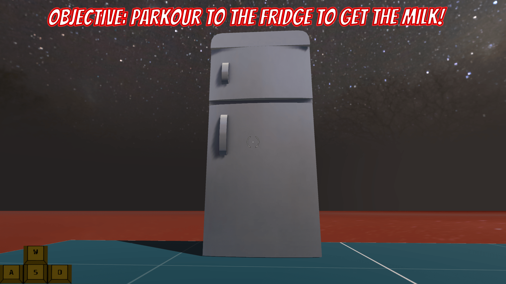

Description:
You play as a person that accidently trespassed on someone's company's land, now you are kidnapped and are being tested to get some milk that is on the other side of the trial, but you don't have the right amount of parkour skills to go there, but you will try to get there to reach your freedom...

Main Menu

Level 1

Where the milk is
----------------------------------------------------------------
I even worked with a friend from Canada named: Christoff the Game Guy. He is an awesome dude that made the music for the game I made and I was so happy to work with him.
Unfortunatly the code has been lost to time what I have created, I deleted the files after I needed more space for my laptop.
Fun Fact: This game was made because one of my teachers recommended to try and use Unity right before the 3rd period, because I still used RPG Maker MV at the time. After I made this game, I decided to cancel the game what I made in RPG Maker for 2 years at the time and just went with Unity.
----------------------------------------------------------------
This game was one of my first attempts to make a game inside of Unity, I worked alot on it and was happy with the result. It was very fun to work on this game and of course had some help with this game fixing some bugs. I even asked someone to make music for the game itself, that's how happy I was with the game.
----------------------------------------------------------------